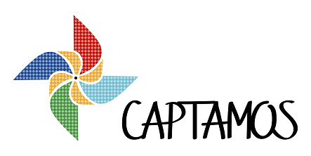

Captamos promove Rodas de Conversa sobre Sustentabilidade das ONGs
03 de Novembro de 2016 às 12:00
Com entrada franca, Rodas de Conversa acontecerão em seis estados do Brasil para apresentar a Captamos e debater acerca dos desafios e soluções em captação de recursos das ONGs.
Como fazer? Por onde começar? Com quem falar? Como abordar? Como se planejar? Essas e tantas outras dúvidas permeiam o cotidiano de muitas Organizações Não Governamentais quando o assunto é captar recursos para seus projetos sociais. A partir destas e tantas outras dúvidas a Captamos foi lançada e está em constante aprimoramento para auxiliar e profissionalizar a captação de recursos no país. E para fazer com que a plataforma aproxime-se de seu público e o escute de perto, serão realizados eventos de lançamento por algumas capitais do Brasil, serão as Rodas de Conversa sobre “Quais os desafios e soluções em Captação de Recursos das ONGs?” com a presença de João Paulo Vergueiro, coordenador geral da Captamos e diretor executivo da ABCR..
João Paulo Vergueiro conta que o panorama brasileiro para captação de recursos no terceiro setor ainda é tímido. “Se compararmos o cenário dos últimos anos em captação de recursos para ONGs e outras instituições do terceiro setor no Brasil ao de outros países mais desenvolvidos, estamos muitos passos atrás. E a situação tem se agravado muito por conta da atual conjuntura socioeconômica pela qual passa o nosso País. Atualmente, existem cerca de 300 mil ONGs no Brasil, mas somente 24% delas têm uma área de captação de recursos estabelecida. Isso dificulta muito o processo de captação, aliás, muitas sequer têm um processo, então, o apoio a essas instituições é urgente”, explica João Paulo.
De acordo com a pesquisa Doação Brasil, realizada pelo Instituto para o Desenvolvimento do Investimento Social (IDIS), as doações individuais dos brasileiros para ONGs totalizaram quase R$ 14 bilhões em 2015. Já, nos Estados Unidos, no mesmo período, as doações chegaram a um trilhão de dólares.
Em Fortaleza a Roda de Conversa acontecerá no I Fórum de Discussão da Rede Compartilha e nos demais estados contará com a participação de um convidado especial.
A entrada para os eventos é gratuita, porém, com vagas limitadas.
Programação - Rodas de Conversa: Quais os desafios e soluções em Captação de Recursos das ONGs?
08 de novembro, às 17h30, em Fortaleza, CE - I Fórum de Discussão da Rede Compartilha - Inscreva-se
11 de novembro, às 10h, em Olinda, PE - com Manuela Holtz, gerente de diálogo direto da Anistia Internacional - Inscreva-se
17 de novembro, às 15h, em Belém, PA - com Cecilia Barros, gerente de captação de recursos da Oxfam - Inscreva-se
18 de novembro, às 10h, em Manaus, AM - com Pedro Espinoza, diretor de captação de recursos do Greenpeace - Inscreva-se
24 de novembro, às 17h, em Belo Horizonte, MG - com Danielle Norberto Costa Ferreira, coordenadora de captação de recursos da Childfund - Inscreva-se
25 de novembro, às 10h, em Brasília, DF - Inscreva-se
Como fazer? Por onde começar? Com quem falar? Como abordar? Como se planejar? Essas e tantas outras dúvidas permeiam o cotidiano de muitas Organizações Não Governamentais quando o assunto é captar recursos para seus projetos sociais. A partir destas e tantas outras dúvidas a Captamos foi lançada e está em constante aprimoramento para auxiliar e profissionalizar a captação de recursos no país. E para fazer com que a plataforma aproxime-se de seu público e o escute de perto, serão realizados eventos de lançamento por algumas capitais do Brasil, serão as Rodas de Conversa sobre “Quais os desafios e soluções em Captação de Recursos das ONGs?” com a presença de João Paulo Vergueiro, coordenador geral da Captamos e diretor executivo da ABCR..
João Paulo Vergueiro conta que o panorama brasileiro para captação de recursos no terceiro setor ainda é tímido. “Se compararmos o cenário dos últimos anos em captação de recursos para ONGs e outras instituições do terceiro setor no Brasil ao de outros países mais desenvolvidos, estamos muitos passos atrás. E a situação tem se agravado muito por conta da atual conjuntura socioeconômica pela qual passa o nosso País. Atualmente, existem cerca de 300 mil ONGs no Brasil, mas somente 24% delas têm uma área de captação de recursos estabelecida. Isso dificulta muito o processo de captação, aliás, muitas sequer têm um processo, então, o apoio a essas instituições é urgente”, explica João Paulo.
De acordo com a pesquisa Doação Brasil, realizada pelo Instituto para o Desenvolvimento do Investimento Social (IDIS), as doações individuais dos brasileiros para ONGs totalizaram quase R$ 14 bilhões em 2015. Já, nos Estados Unidos, no mesmo período, as doações chegaram a um trilhão de dólares.
Em Fortaleza a Roda de Conversa acontecerá no I Fórum de Discussão da Rede Compartilha e nos demais estados contará com a participação de um convidado especial.
A entrada para os eventos é gratuita, porém, com vagas limitadas.
Programação - Rodas de Conversa: Quais os desafios e soluções em Captação de Recursos das ONGs?
08 de novembro, às 17h30, em Fortaleza, CE - I Fórum de Discussão da Rede Compartilha - Inscreva-se
11 de novembro, às 10h, em Olinda, PE - com Manuela Holtz, gerente de diálogo direto da Anistia Internacional - Inscreva-se
17 de novembro, às 15h, em Belém, PA - com Cecilia Barros, gerente de captação de recursos da Oxfam - Inscreva-se
18 de novembro, às 10h, em Manaus, AM - com Pedro Espinoza, diretor de captação de recursos do Greenpeace - Inscreva-se
24 de novembro, às 17h, em Belo Horizonte, MG - com Danielle Norberto Costa Ferreira, coordenadora de captação de recursos da Childfund - Inscreva-se
25 de novembro, às 10h, em Brasília, DF - Inscreva-se
Notícias mais populares
Gestão
Em agosto de 2017, a revista ÉPOCA e o Instituto Doar divulgaram a primeira ediç&...
Contexto e tendências
Criado para tornar mais transparentes as parcerias entre a administração públic...
Profissional captador
A captação de recursos é fundamental para a sustentabilidade de uma organiza&cc...